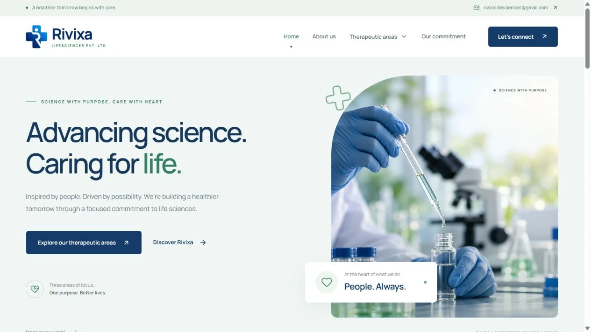
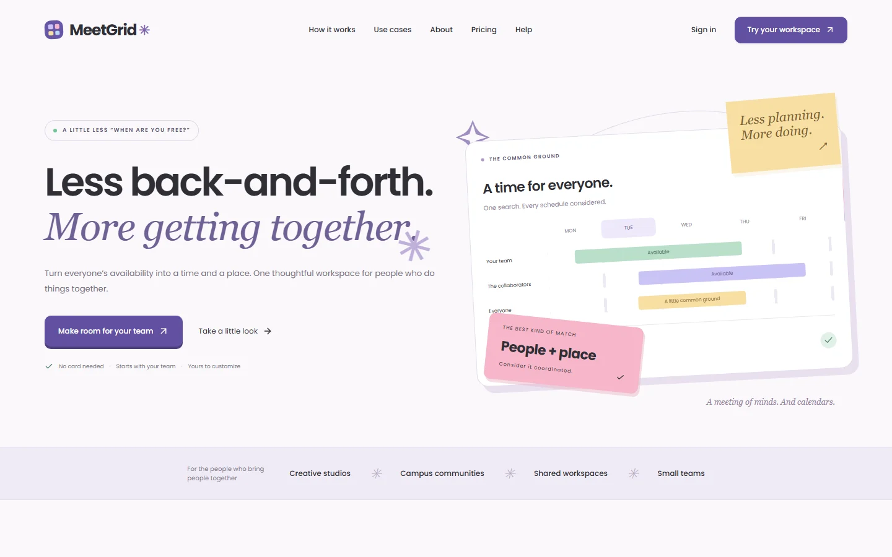
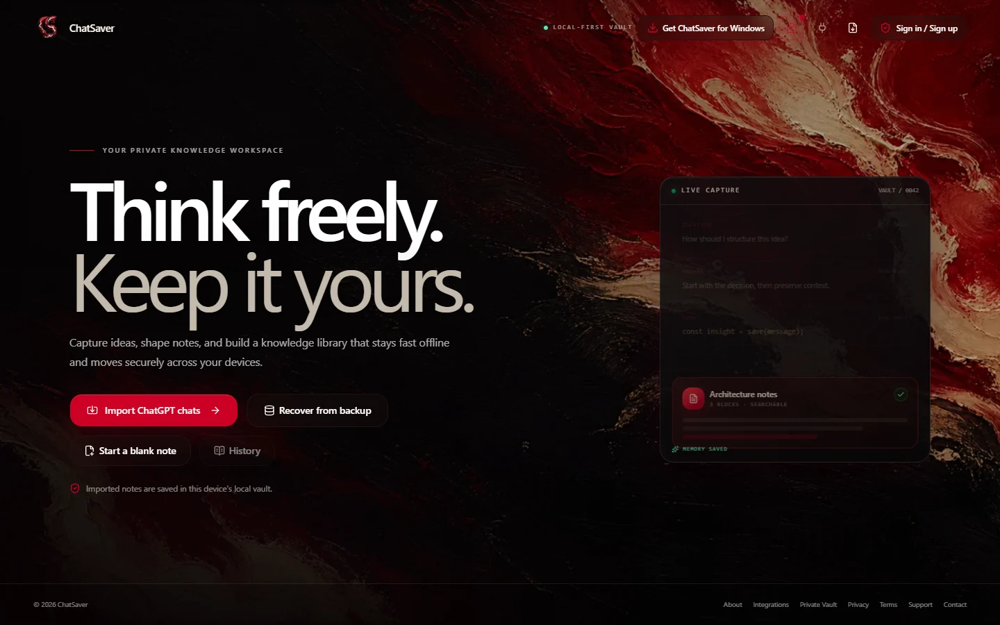

✦ ENGINEERING PARTNER FOR AMBITIOUS TEAMS
Good ideas.Real impact.
Strategy, design, and engineering.
Connected to build what matters.
02 / THE IDEA THE AMBITION
Ambition needs
structure.
Digital systems that move business. Strategy, engineering, cloud, AI, security, and operations—delivered by one accountable partner.
Explore our approach ↗03 / ORIENT FIRST, A CLEAR DIRECTION
Less noise.
More signal.
We align on the business outcome, user reality, constraints, risks, and decisions that cannot be postponed.
- 01 / THE OUTCOMEWhat should change
for the business? - 02 / THE PEOPLEWhat do users
actually need?
SHARED BRIEF → OPPORTUNITY MAP → FIRST DELIVERY SLICE
How we find the signal ↗04 / SHAPE CRAFT WITH CONSEQUENCE
Good design.
Runs deeper.
Experience, architecture, data, and operations are shaped together. Responsive interfaces. Purposeful motion. Accessible systems.
Experience systems ↗05 / CONNECTED DISCIPLINES CONNECTED BY DESIGN
Different disciplines.
One connected system.
Deep where it matters. Connected everywhere.
From the first strategic decision to live operations.
Product engineering
Web products, platforms, APIs & modernization.
Experience systems
UX, interfaces, design systems & accessibility.
Cloud & platforms
Architecture, infrastructure & delivery pipelines.
Applied AI
Intelligent search, workflow agents & evaluation.
Messaging & operations
Events, observability, SRE & managed engineering.
Security engineering
Threat modeling, identity & secure delivery.
06 / INFRASTRUCTURE MAKE CHANGE POSSIBLE
A foundation
for change.
Cloud architecture, platform engineering, CI/CD, and integrations. Reliable foundations that support continuous change without operational chaos.
Cloud & platforms ↗Decisions that hold up.
Change, with confidence.
Care beyond launch.
07 / INTELLIGENCE USEFUL, BY DESIGN
Useful intelligence.
Human control.
AI built around real business processes and trusted data. Intelligent search, workflow agents, and evaluation—with human control designed in.
Applied AI at StackOrcs ↗08 / PROTECT & OPERATE CARE BEYOND THE LAUNCH
Trust is built.
Into every layer.
Threat-aware architecture, identity, application security, messaging, monitoring, and incident readiness. Trust is engineered into the product.
09 / MODASTITCH REAL SOFTWARE. REAL WORK.
Commerce.
With character.
A clothing storefront with product discovery, cart and checkout, inventory controls, and an admin workspace.

10 / RIVIXA HEALTHCARE & LIFESCIENCES
Science.
Made clear.
Three therapeutic areas. Nine branded ophthalmology products, searchable details, packaging PDFs, and professional enquiries.

11 / MEETGRID PEOPLE + PLACE + TIME
Less back-and-forth.
More together.
One workspace to match team availability with the right room. Recurring meetings, bookings, and plan-based tools.

12 / CHATSAVER IDEAS WORTH KEEPING
Good conversations.
Lasting knowledge.
A knowledge vault that turns ChatGPT exports into editable, searchable notes. Offline access and cross-device recovery.

13 / THE CREW BUILT AROUND PEOPLE
Serious engineering.
Human partnership.
Technology changes quickly. Good partnership does not. We bring close collaboration, candid decisions, and engineering into one delivery relationship.
Meet StackOrcs ↗14 / CONTACT STAY CONNECTED
Make the next
thing matter.
Bring the ambition. Tell us the constraints.
Let's find the right next step.